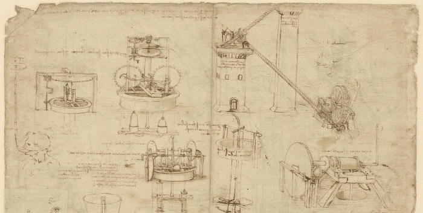

Los inventos más influyentes de la historia
Introducción
A lo largo de la historia, los inventos han sido la chispa que impulsa el progreso de la humanidad. Desde la rueda, que revolucionó el transporte, hasta Internet, que nos conecta con el mundo en segundos, cada innovación ha dejado una marca imborrable en nuestra sociedad. Esta página está dedicada a explorar algunos de los inventos más significativos que han cambiado el curso de la historia y cómo su impacto continúa moldeando nuestras vidas hoy.
El impacto de los grandes inventos
Los grandes inventos no solo han facilitado nuestra vida diaria, sino que también han transformado por completo la forma en que entendemos y vivimos en el mundo. La imprenta permitió la difusión masiva del conocimiento, la electricidad iluminó nuestras noches y abrió las puertas a nuevas tecnologías, y la penicilina salvó millones de vidas al revolucionar la medicina. Cada uno de estos avances marcó un antes y un después en la historia, demostrando cómo una idea puede cambiar el destino de la humanidads
Inventos más icónicos
- La imprenta.
- La electricidad.
- La rueda.
- El teléfono.
- El Internet.
- La penicilina.
- El automóvil.
- El avión.
- La computadora.
- El satélite artificial.
Para saber más
- Thomas Edison y la bombilla eléctrica
- La imprenta de Gutenberg
- Alexander Fleming y la penicilina
- Internet y la era digital
- Nikola Tesla y la corriente alterna
- Conoce más sobre Thomas Edison
- Cómo
funciona la imprenta de Gutenberg"
- Historia de la penicilina
- El
nacimiento de Internet
- El genio de
Nikola Tesla
| Invento | Creador | Año |
|---|---|---|
| La imprenta | Johannes Gutenberg | 1440 |
| La bombilla | Thomas Edison | 1879 |
| La penicilina | Alexander Fleming | 1928 |
| El avión | Hermanos Wright | 1903 |
| Internet | Vinton Cerf y Robert Kahn | 1983 |